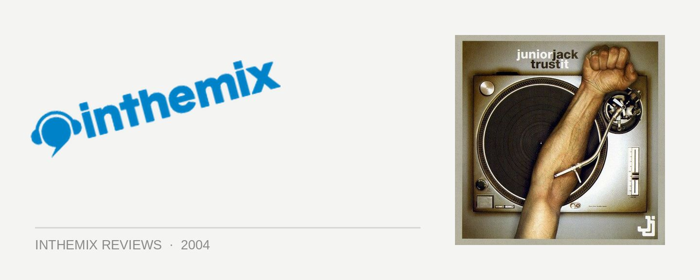

Junior Jack - Trust It
(PIAS/Shock Records)
Junior Jack seems to have somewhat of a problem with coming to our shores: after canceling two consecutive Australian tours, punters were left with a look of slack-jawed disbelief when he actually showed up to play over the Easter long weekend. Responsible for one of the biggest house tunes over the last few years with Thrill Me, Junior Jack has stepped up to the plate to face the perception that dance producers just can’t cut it when it comes to full-length albums. While even fans may have only been expecting a collection of similar-sounding club tunes for Junior Jack’s debut, he has shocked critics by delivering a diverse hour of house music that, most importantly, sounds like an album rather than a mix CD.
The track that kicks it off, Trust It, features some subdued squelchy house sounds overlaid with a black street cool rap from MC Shurakano, a nicely charismatic way to start the album. Next up is Da Hype, another big hit that is being played around the traps at the moment. Stupidisco has a decidedly trashy electro feel to it, and as Junior Jack revealed in a recent interview, the title is as much an ironic piss-take on the recent resurgence of retro 80’s than anything else. This is made painstakingly obvious, as Stupidisco revels in its trashiness, whilst simultaneously tapping into the ‘fun’ aspect that has made electro so popular again.
One of the best things about Trust It is its diversity: The Roots is an uplifting, jazzy number, while there are the deeper instrumental sounds of Alone and Hola. While a little predictable in it’s sampling of an old disco tune, the upcoming single Luv 2 U has just that much more substance than your typical filtered house. And fans will be pleased to hear that both Thrill Me and the Latin percussion-filled hit from last year E-Samba have been included, filling the album’s quotient for upfront, big-room house sounds. After all this, the album is rounded off with the cool, soulful breaks of Must Be the Darkness.
House lovers will agree that Trust It has far more personality than many of the generic tunes that are endlessly regurgitated week after week. While delivering an album that fits pretty neatly into his chosen genre, Junior Jack has still managed produce house music that is creative and has substance. Junior Jack deserves big thumbs up for shunning the approach of delivering a collection of generic club tunes, and instead releasing a proper artist album. And for house fans, it offers so much more than a typical mix CD – an album that actually sounds great on your home stereo.